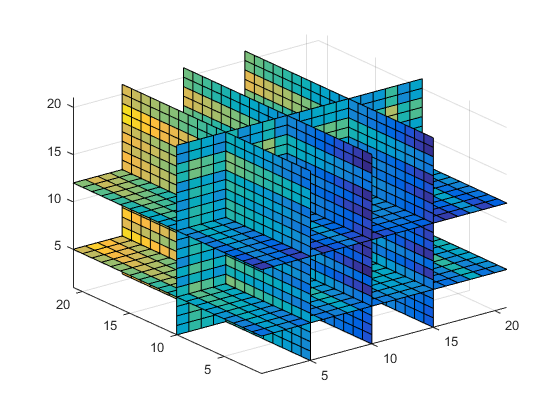
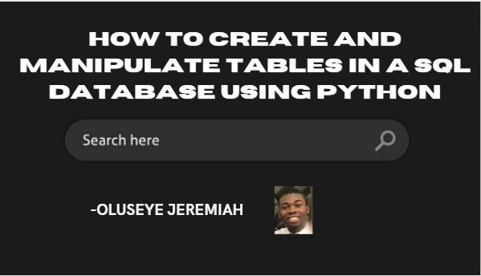
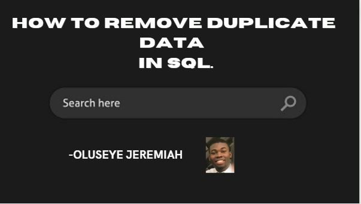
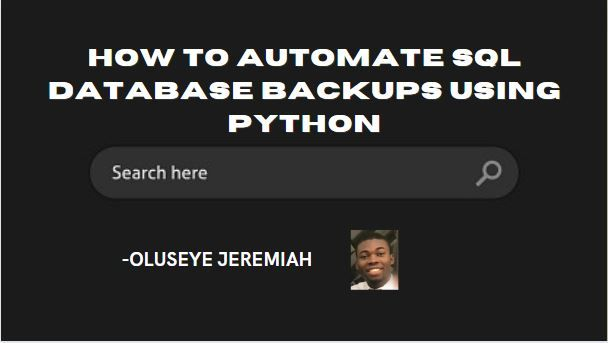
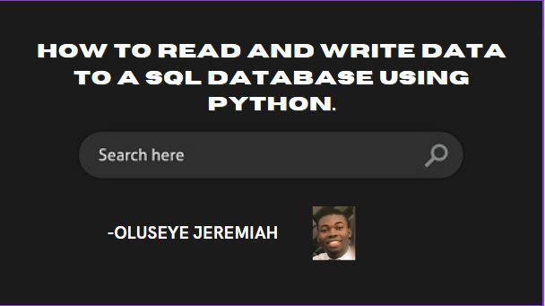
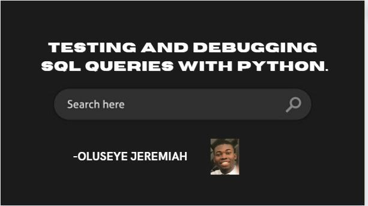
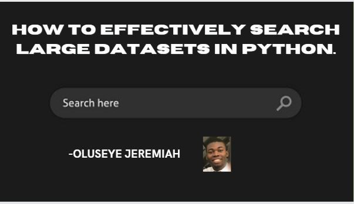

Hello and welcome to the world of data analysis! If you're considering a career in this field, you're in good company. Data analysis is a growing and exciting field that's becoming increasingly important in today's data-driven world.

Credit card fraud has long been a deep source of concern in the security industry. Payment card fraud losses totaled $28.65 billion globally in 2019, according to Nilson Report statistics.
You should back up your SQL database on a regular basis. It's a critical task that helps ensure that your data is always protected.
But manually backing up a database can be time-consuming and error-prone, especially if you have multiple databases to back up.
In this article, we will explore how to automate SQL database backups using Python, making the process faster, easier, and less error-prone.

Have you ever questioned how we can become so engrossed in watching videos on YouTube and how some of these posts end up on your Facebook or Instagram timeline? For those of us who are familiar with Netflix, we frequently receive recommendations for movies that are similar to the ones we are looking for or perhaps the ones we have just finished watching. This is made possible by an algorithm known as the "recommendation system." In this tutorial, we’ll talk more about the recommendation system, build a system for recommending movies, and then integrate it into Comet.
As a data analyst, you might often find yourself repeating mundane tasks on a daily basis when working with Excel.
These tasks may include copying and pasting data, formatting cells, and creating charts, among others. Over time, this can become monotonous and time-consuming, leaving you with less time to focus on more important aspects of data analysis, such as identifying trends, outliers, and insights.
This is why automating Excel using Python can be a game-changer, helping you streamline your workflows and free up time for more meaningful analysis.
In this tutorial, I'll show you some helpful ways to create, update, and analyze Excel spreadsheets using Python programming. Let's dive in.
Kangas is a machine learning platform that allows users to explore image classification. The platform provides tools and resources to build image classification models using machine learning algorithms. Users can upload their images, label them, and use them to train their models. Kangas also allows users to visualize their model's performance and provides tools for analyzing the model's predictions. The platform is designed to be user-friendly, making it accessible for those who are new to machine learning. Overall, Kangas is an excellent platform for exploring image classification and building machine learning models for image-based applications.
SQL is a powerful language that allows you to extract, manipulate and analyze data from relational databases. But writing and debugging SQL queries can be a challenging task.
Testing and debugging SQL queries is crucial to ensure that they produce accurate and efficient results. And you can use Python to automate the process of testing and debugging SQL queries.
In this article, we will discuss the various techniques you can use to test and debug SQL queries using Python, and we will provide code examples to illustrate these techniques.
Sentiment analysis, commonly referred to as “opinion mining,” is the method of drawing out irrational information from written or spoken words. The study of how people communicate their thoughts, beliefs, and feelings through language is a fast-expanding area of natural language processing (NLP).

Machine learning has become a popular field in recent years, with various applications in data analysis, computer vision, natural language processing, and more.
Python is one of the most widely used programming languages for machine learning, thanks to its rich ecosystem of libraries, frameworks, and tools.
But to build a machine learning system, you need to have access to data. Most data is stored in databases, particularly SQL databases, which are used by businesses and organizations to store and manage data.
In this article, we will explore how to perform machine learning with Python and SQL.
Image classification is a task that involves training a neural network to recognize and classify items in images. A dataset of labeled images is used to train the network, with each image given a particular class or label. Thousands or even millions of photos make up the normal size of the dataset needed to train the model. Before being fed into the network, the photos are pre-processed and shrunk to the same size.

Time series analysis is used in our day-to-day activities as it answers the questions of “How many”, “When will”, “How will”, “How much” and other related questions that may arise when there is a need to predict the future. Depending on the level of accuracy required for the prediction, the duration of the predicted period, and, of course, the amount of time available for feature selection and parameter tuning to produce the desired results, we can approach prediction tasks in various ways.
Conditional statements are an essential part of programming in Python. They allow you to make decisions based on the values of variables or the result of comparisons.
In this article, we'll explore how to use if, else, and elif statements in Python, along with some examples of how to use them in practice.
As a data analyst, you'll want to be as efficient and and effective as possible when working with databases.
SQL is one of the most widely used languages for managing and manipulating data stored in a relational database.
In this article, we'll cover some SQL cheat codes that can help you save time and simplify complex queries.
Loops are an essential concept in programming. They allow you to execute a block of code repeatedly based on certain conditions.
Python offers two types of loops: for and while loops. In this article, we will explore both of these loop types and provide examples of how to use them in your Python code.
Python is a powerful and versatile programming language that offers a wide range of functionalities for developers.
One of the most essential features of Python is the ability to define and call functions.
A function is a block of code that performs a specific task. In Python, defining and calling functions is easy and can greatly improve the readability and reusability of your code.
In this article, we will learn about how cloud computing works, the various cloud services, and the types of cloud computing. So let’s dive in.
One of the most common issues that Developers in the Data industry have had to deal with over the years is the issue of missing data. Data scientists, analysts, data engineers, and machine learning engineers all face the same issue, and the primary cause of missing values is data collection (i.e. the fact that data is usually collected from many different sources).
Data mining is a process by which businesses analyze and turn raw data into actionable information. In the field of cybersecurity, data mining plays a significant role in improving an organization’s cybersecurity posture. The three main applications of data mining in the cybersecurity field are Knowledge Discovery in Databases (KDD), malware Detection, and Anomaly and Fraud Detection. To implement data mining for cybersecurity, organizations need to follow a series of steps, including collecting...
The cloud is becoming a significant topic as many of our day-to-day activities are performed thanks to the Cloud. The cloud has been used to save important documents, pictures, videos, and other contents. But the cloud has moved from just being a means of storing pictures and other documents to providing services to businesses both small businesses and big businesses. A lot of companies are gradually transitioning from on-premise infrastructure to the cloud. So in this article, we will be considering the various cloud services and explaining the differences, advantages, disadvantages, and features of each....
Time series analysis is a statistical technique used to extract meaningful insights from data points collected over time. It involves analyzing the patterns and trends present in a time series dataset to gain a deeper understanding of the underlying phenomenon. Time series analysis is widely used in fields such as finance, economics, weather forecasting, and engineering, among others.
In this article, we'll explore the fundamentals of time series analysis, the key steps involved in the process, and the various techniques and tools used to analyze and visualize time series data.....
Azure SQL Database is a fully managed relational database service provided by Microsoft Azure. It is designed to be highly scalable and secure and allows organizations to easily deploy, manage, and scale their databases in the cloud. With Azure SQL Database, organizations can take advantage of the benefits of the cloud, such as increased performance, scalability, and reduced costs, while maintaining the reliability and security of their database infrastructure....
In this tutorial, we'll learn how to create a small to-do app using two amazing technologies: Next.js and Strapi.
Strapi is an open-source Node.js headless CMS that gives developers the power to easily create self-hosted, customizable, and performant content REST/GraphQL APIs. It is easy to use. First, you create the content structures, i.e. the tables and models. Then, you can write, edit or manage any content type.
Next.js is the frontend part of the to-do app and Strapi will provide the API endpoints to the to-do app. Strapi ensures that we follow the best practices when creating and consuming web resources over HTTP...

Multi-dimensional arrays, also known as matrices, are a powerful data structure in Python. They allow you to store and manipulate data in multiple dimensions or axes.
You'll commonly use these types of arrays in fields such as mathematics, statistics, and computer science to represent and process structured data, such as images, videos, and scientific data.
In Python, you can create multi-dimensional arrays using various libraries, such as NumPy, Pandas, and TensorFlow. In this article, we will focus on NumPy, which is one of the most popular and widely used libraries for working with arrays in Python.
Slicing and indexing are two fundamental concepts in Python. They help you access specific elements in a sequence, such as a list, tuple or string.
By using these techniques, you can extract substrings from strings, filter lists, and extract columns from 2D lists, among other things.
Understanding how to use slicing and indexing is essential for working with data in Python, so let's explore these concepts in detail and provide real-life examples to help you understand how they work.
Structured Query Language or SQL is an effective tool for managing and modifying data that is stored in databases.
The SELECT, INSERT, UPDATE, and DELETE SQL commands are suitable for many common use cases. But sometimes, more sophisticated techniques can help you perform out more complex queries and analyses with improved accuracy and efficiency.
In this tutorial, we will discuss some of the most popular advanced SQL techniques and provide real-world applications for each.
Generating reports from SQL databases is a common task in many organizations. But the process can be time-consuming and error-prone, especially if it involves manual data extraction, transformation, and formatting.
In this article, we will explore how to use Python to automate the process of generating reports from SQL databases, reducing the time and effort required to create and distribute reports.

Python is a powerful programming language that you can use to interact with SQL databases. With the help of Python, you can create, manipulate, and interact with the tables in the SQL database.
In this tutorial, we will be discussing how to create and manipulate tables in a SQL database using Python.

Duplicates can be a big problem in SQL databases as they can slow down query performance and waste valuable storage space.
Fortunately, there are several ways to remove duplicate data in SQL.
In this article, we will explore some of the most effective methods for removing duplicate data in SQL, including using the DISTINCT keyword, the GROUP BY clause, and the INNER JOIN statement.

You should back up your SQL database on a regular basis. It's a critical task that helps ensure that your data is always protected.
But manually backing up a database can be time-consuming and error-prone, especially if you have multiple databases to back up.
In this article, we will explore how to automate SQL database backups using Python, making the process faster, easier, and less error-prone.

Databases are a crucial component of modern-day software systems. And SQL databases are one of the most widely used types of databases.
They are ideal for managing data in a structured and organized way, and they are widely used in various applications, including e-commerce, healthcare, finance, and more.
In this article, we will discuss how to read and write data to a SQL database using Python. We will provide examples of how to connect to a SQL database using Python and how to execute SQL commands to perform basic database operations such as insert, update, delete, and select.

SQL is a powerful language that allows you to extract, manipulate and analyze data from relational databases. But writing and debugging SQL queries can be a challenging task.
Testing and debugging SQL queries is crucial to ensure that they produce accurate and efficient results. And you can use Python to automate the process of testing and debugging SQL queries.
In this article, we will discuss the various techniques you can use to test and debug SQL queries using Python, and we will provide code examples to illustrate these techniques.

Imagine you're trying to find a needle in a haystack, but the haystack is the size of a mountain. That's what it can feel like to search for specific items in a massive dataset using Python But fear not! With the right techniques, you can efficiently search and lookup information in large datasets without feeling like you're climbing Everest.
In this article, I'll show you how to take the pain out of search operations in Python. We'll explore a range of techniques, from using the built-in bisect module to performing a binary search, and we'll even throw in some fun with sets and dictionaries.